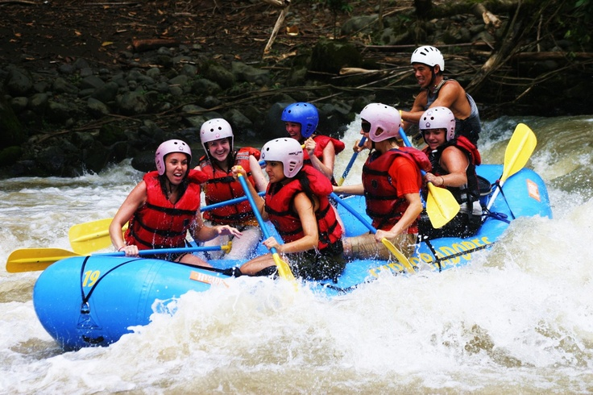

If you want a fun day in Peru, this is the team to go with. They love what they do. Our team give us the best water adventure with the best company. Our adventure experts are ready to guide you in this amazing experience, get to contact with one of them.